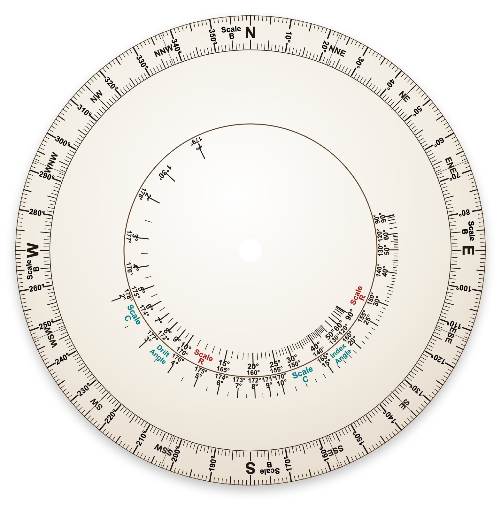
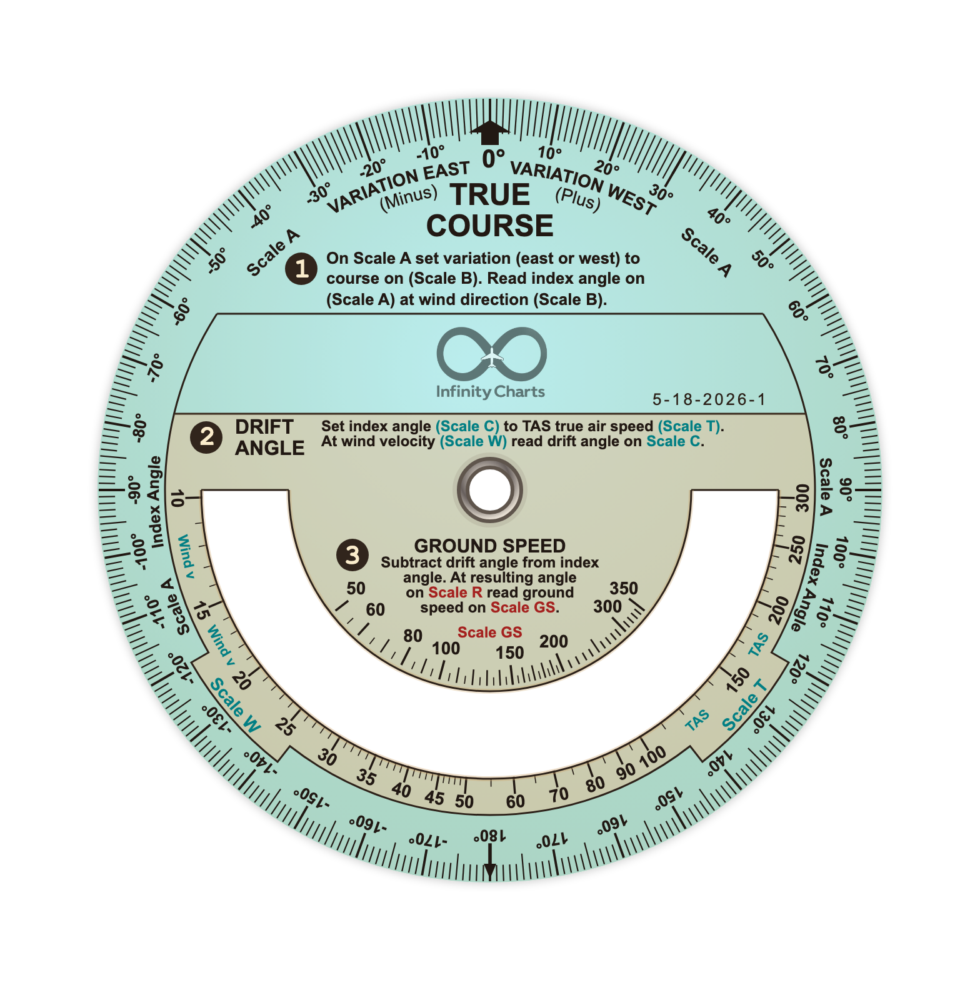

Worldwide chart styles
Generated chart backgrounds let one familiar style cover any part of the world, including US sectional, TPC, ICAO-style, terrain, and overlay-focused views.
Unlimited, never-outdated. MSFS 2024 EFB charts with worldwide VFR styles, IFR procedures, route timing, terrain profiles, drawing tools, rulers, and real world flight planning utilities.
what it does
Generated chart backgrounds let one familiar style cover any part of the world, including US sectional, TPC, ICAO-style, terrain, and overlay-focused views.
Dedicated IFR maps, procedures, approach and departure plates, missed approach routing, holds, MSA display, and terrain-aware planning.
Switch between ICAO, Sectional, TPC, CAA and other chart styles for any location.
Airport, VOR, NDB, FIX, airspace, and facility lookup ordered by proximity. Jump to any location with a click.
Click route legs to add waypoints, drag them into place, view distance and magnetic course per leg, then import, export, paste, reverse, or reorder the plan.
Built-in number cruncher, analog chronograph, calculator watch, analog flight computer, drawing, eraser, undo, flight plan import/export, and physical rulers.
Video workflow
Rotate the chart, pull out the ruler, read radial and nautical-mile distance, draw notes directly on the map, and cross out segments as you fly.

Save and load routes plus map artwork so long trips, hand-drawn notes, and visual checkpoints stay preserved between flights.
Use in Game
Infinity Charts makes navigation real inside Microsoft Flight Simulator. The EFB app and toolbar addons allow quick and detailed flight planning, the way aviation students around the world still learn it today.
Chronometer with local time, GMT/UTC offsets and stopwatch
Analog Flight Computer to make IAS/TAS, wind drift, unit conversionsand other calculations
Punch-key solar calculator
Draw as you would on paper, and save/load your notes
Generated paper flight plans




GitHub Pages ready
Get Infinity Charts through Patreon. No risk, 7 day refund policy.
Project updates
Worldwide charts in all styles, ultra-fast route editing, IFR plates and maps, terrain profile, MEF and MORA, route timing ticks, airspace navaid and airport information, search, draw on map, rulers, chronograph, calculator, flight computer, FPL/PLN import/export.
Standalone iPad/web apps, TFR and NOTAMs, more flight computers, every aviation chart style in the world.